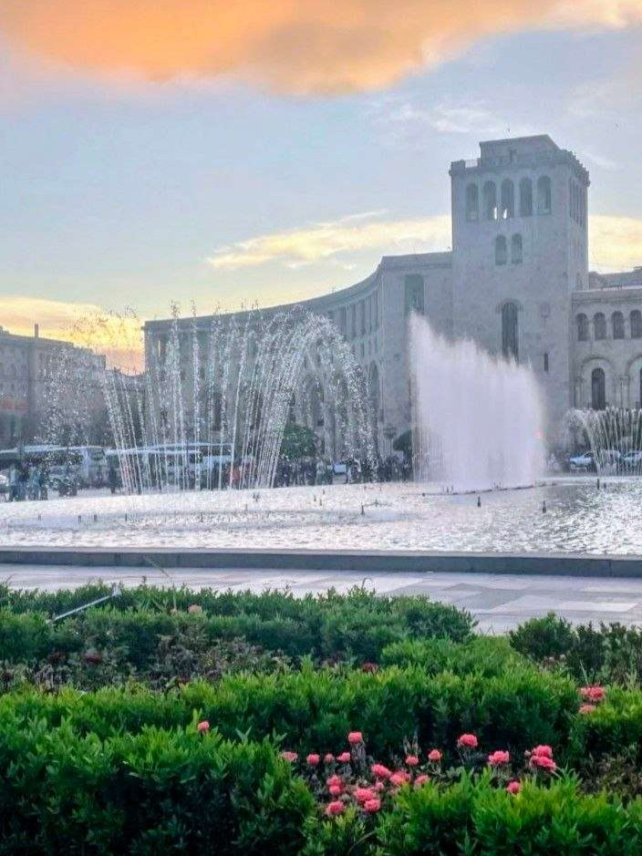
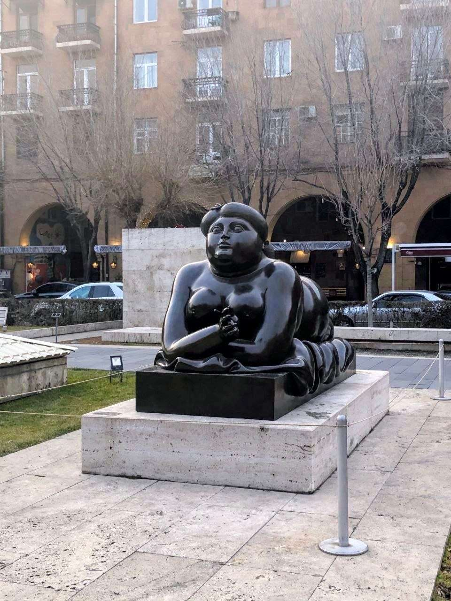
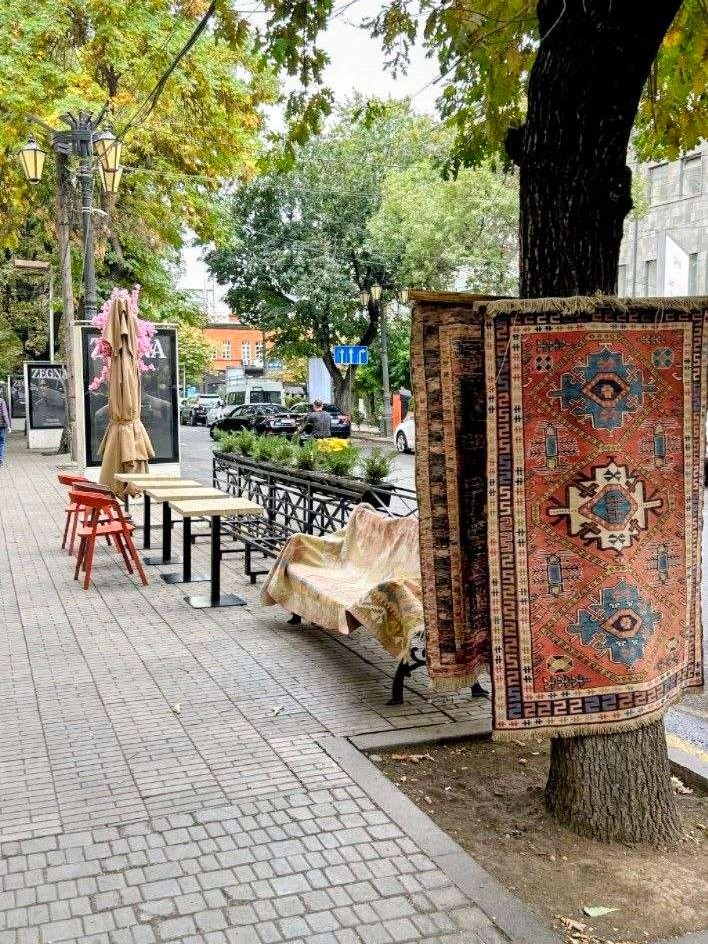
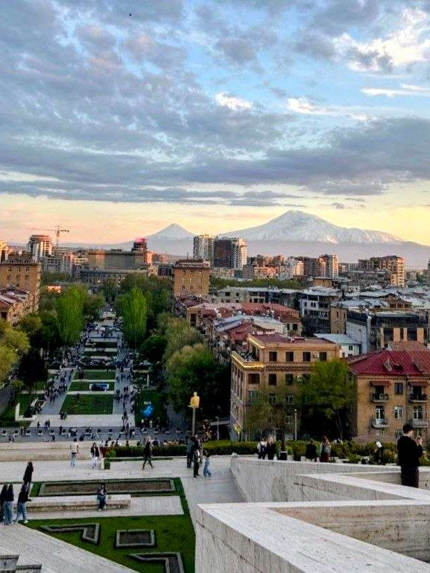
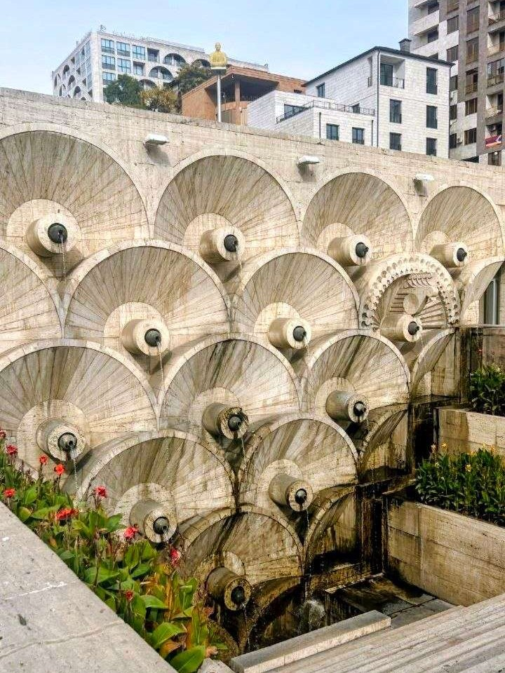
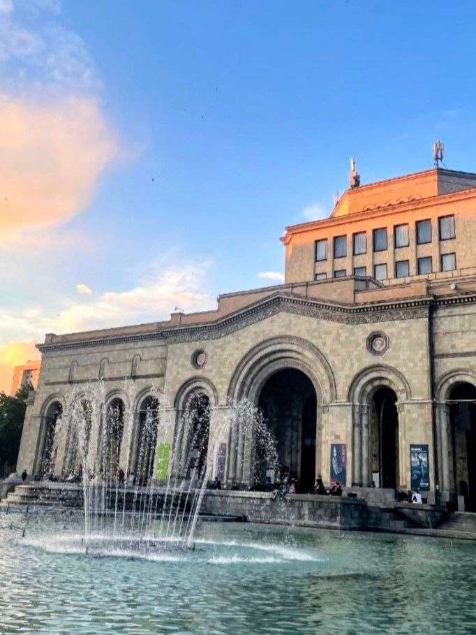
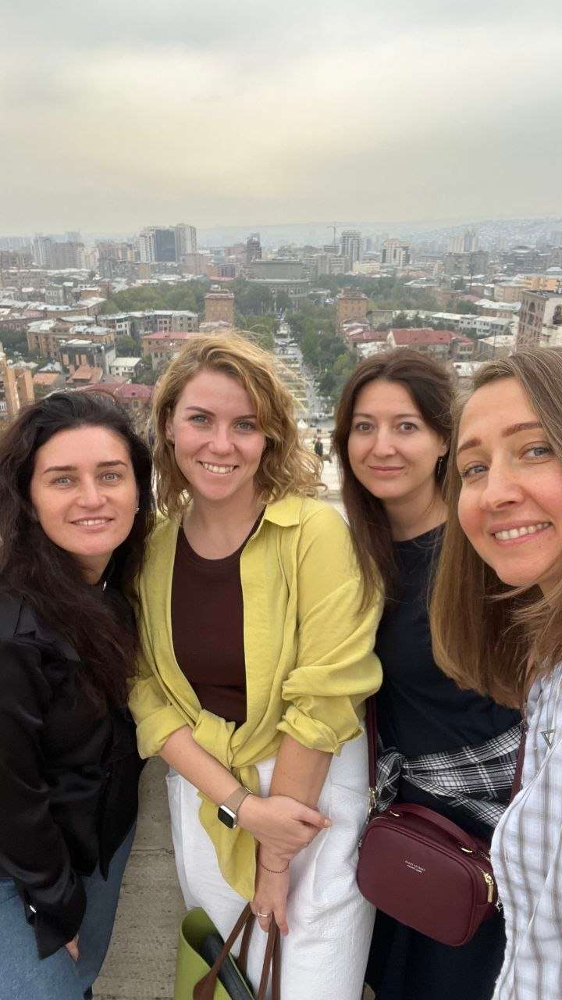
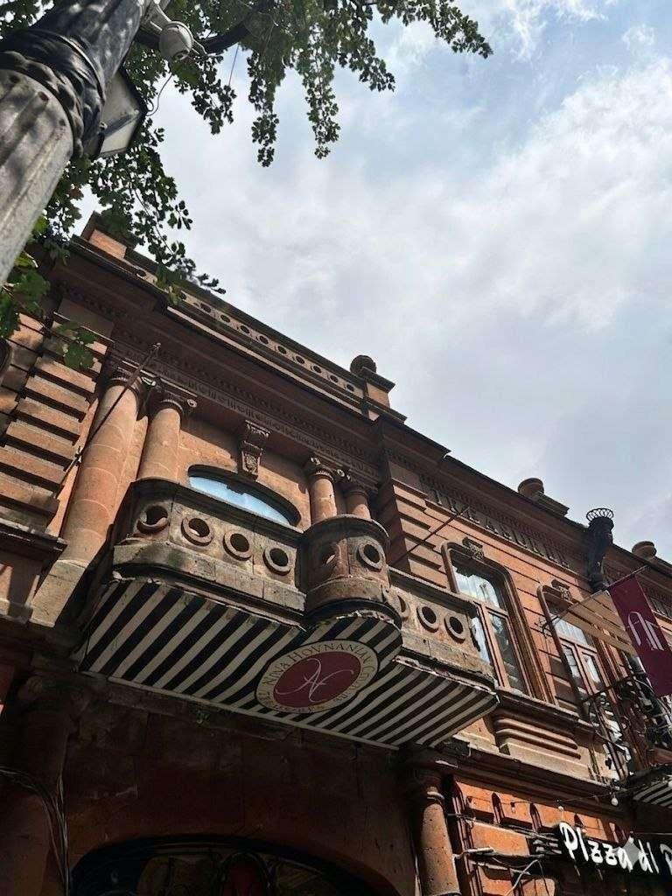

Эй, джан, Ереван - столица всех армян
Обзорная по Еревану
Обзорная прогулка по Еревану, чтобы ближе познакомиться с одним из древнейших городов мира, который скрывает свой истинный возраст под застройкой советского периода
Подробнее о маршруте и деталях
Что вас ждет на экскурсии:
- Посмотрим главные достопримечательности центральной части города: Каскад, Площадь свободы, Площадь республики
- Познакомимся с современным искусством на Каскаде
- Прогуляемся по паркам и скверам города, у каждого из которых своя история
- Увидим кусочек Франции в Ереване
- Узнаем историю старейшей церкви города, которая пережила монгольское завоевание и советский период
Еще на маршруте:
- Заглянем в чудом сохранившийся кусочек старого Еревана, преобразившийся в арт-кластер
- Насладимся дореволюционной застройкой улицы Абовяна
- Погрузимся в историю города и его жителей
- Узнаем, как Ереван стал столицей мирового армянства
Кому подойдет экскурсия
Тем, кто впервые в столице Армении и даже тем, кто уже бывал в Ереване, чтобы посмотреть на город с нового ракурса и узнать его поближе
Организационные детали:
Продолжительность маршрута: ~ 3,5 ч
Маршрут полностью пешеходный, по желанию можем сделать остановку в кафе.
Чтобы чувствовать себя комфортно, одевайтесь по погоде. Летом потребуется головной убор и солнцезащитный крем.
Стоимость:
Для групп 1-4 человека - 30 000 драм (70 евро)
от 4 человек — дополнительно 5 000 драм/чел (12 евро)